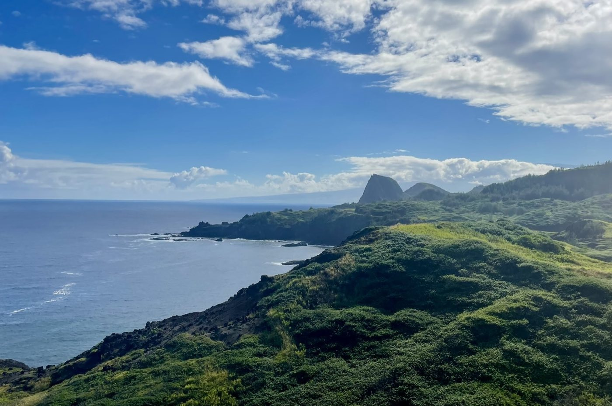
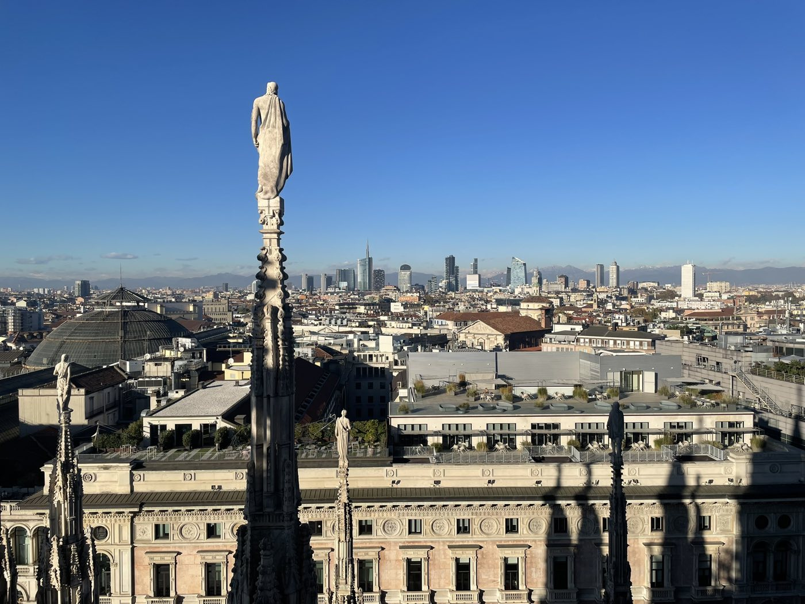
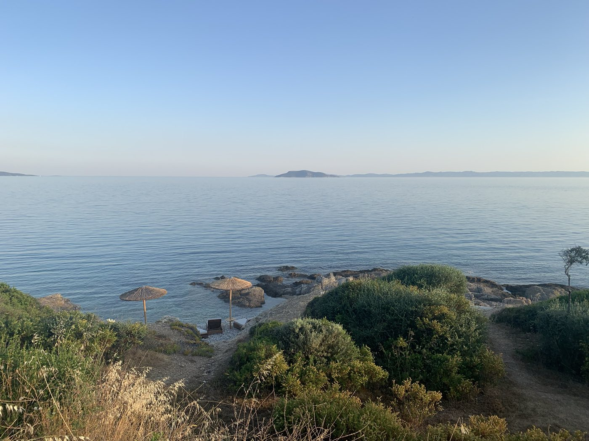
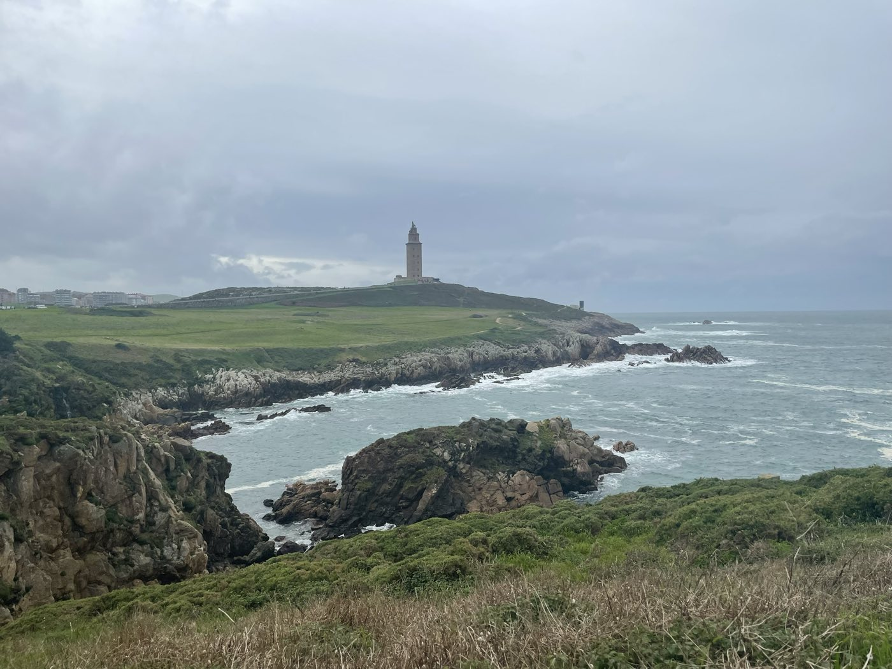

Hello, I’m
Brett Pasula
Full-stack developer passionate about building software that makes an impact.
01 About
Technical
Leadership
Personal Interests
Education
Master of Business Administration
The MBA program at Simon Fraser University’s Beedie School of Business complements my technical background with deeper expertise in leadership, strategy, finance, and operations.
Bachelor of Computer Science
An introductory programming course I took as part of my former studies initiated my interest in computer programming. In the fall of 2018 I returned to UBC to complete my Bachelor of Computer Science. As part of my BCS degree I completed a co-op term and courses on algorithms, data structures, data visualization, hardware, machine learning, networking and relational databases. I supplemented my degree with additional business courses on financial and managerial accounting, entrepreneurship, ethics, and processes and operations.
Bachelor of Science, Geology
I moved to the west coast of Canada in the early 2010’s to attend the University of British Columbia (UBC) and play on the Thunderbirds golf team. I graduated with a Bachelor of Science in Geology with Distinction in 2018. As part of my studies I completed courses on geochemistry, geomorphology, GIS, groundwater hydrology, igneous, metamorphic and sedimentary petrology, soils, statistics, structural geology, and volcanology. I worked a summer season in northeast BC assisting with a seismic survey (and back in the lab on off weeks), and another season in the Golden Triangle working with a junior exploration company.
02 Gallery



